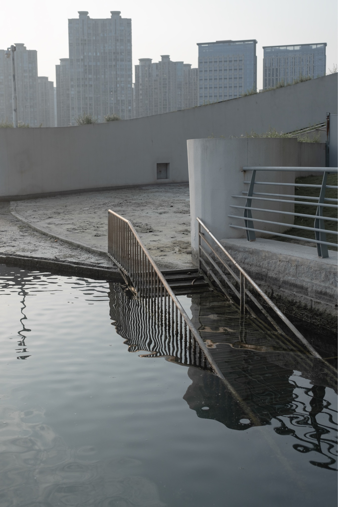
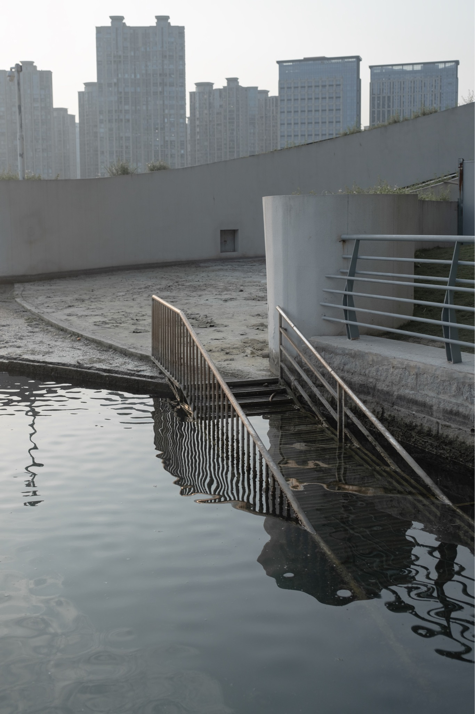

Loop - 2025
The cycle of places and memory, urban ruins, nature’s reclamation, and industrial fragments. Through Loop, I attempt to capture the vanishing echoes of the past, juxtaposing construction and decay, movement and stagnation. The photographs reflect a continuous transformation of space and identity—a loop of existence.